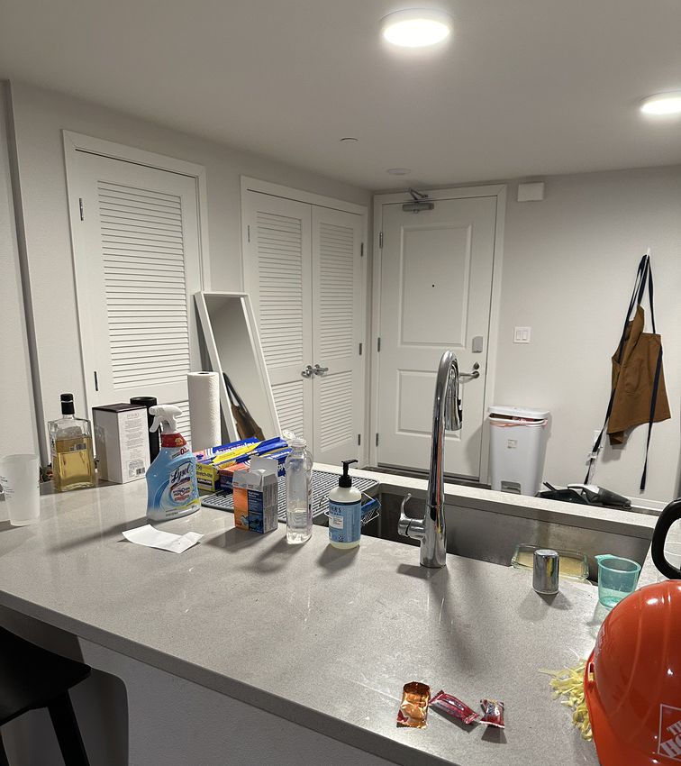
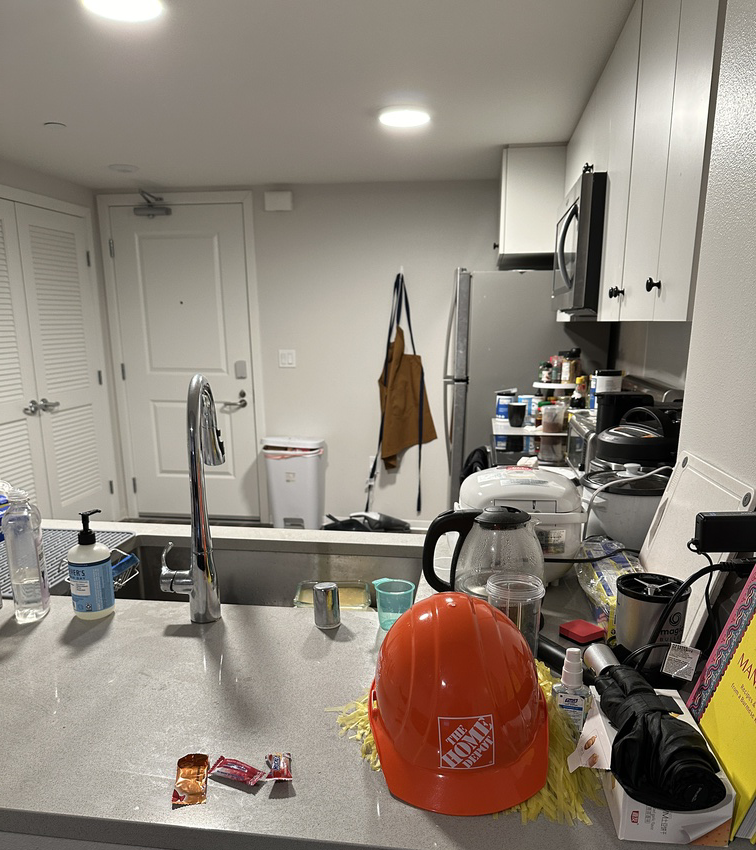
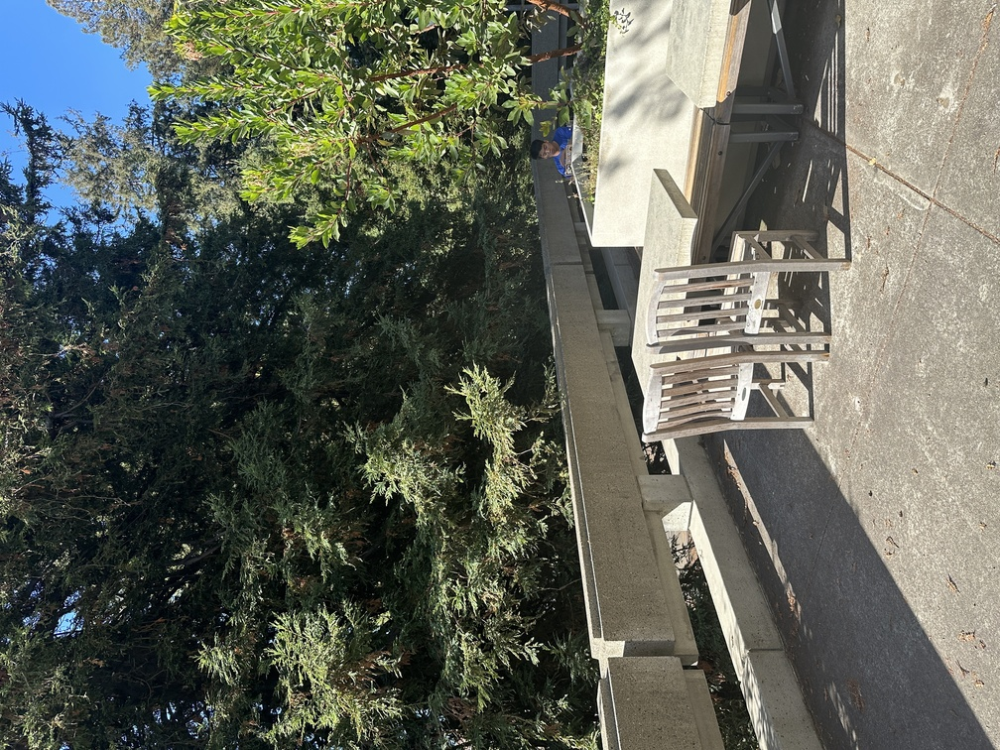
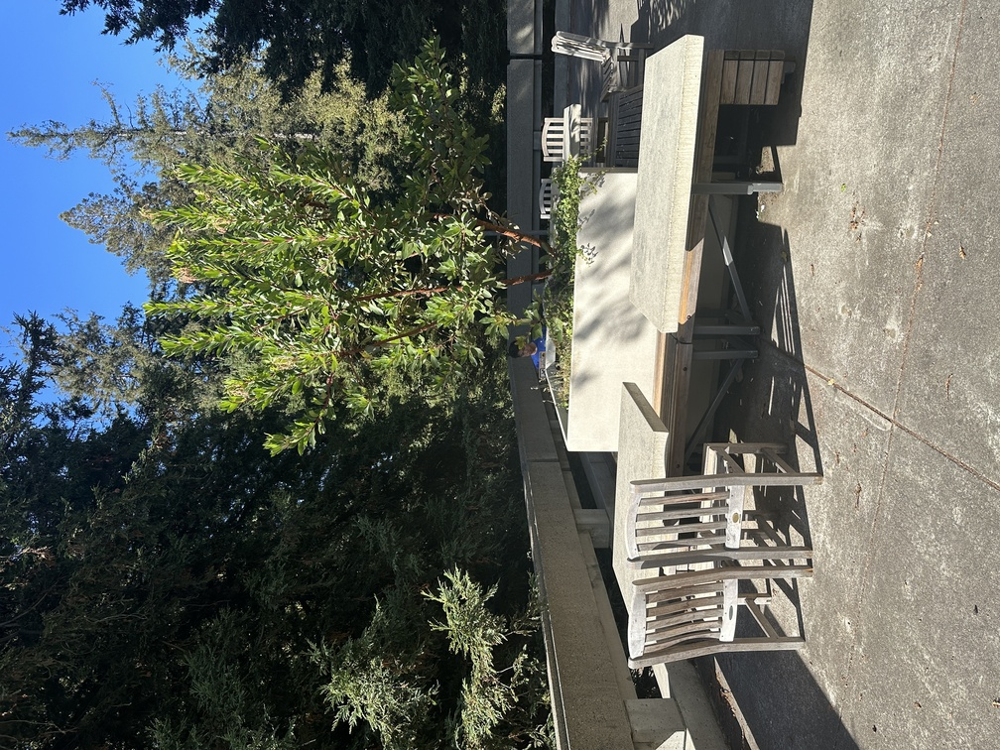
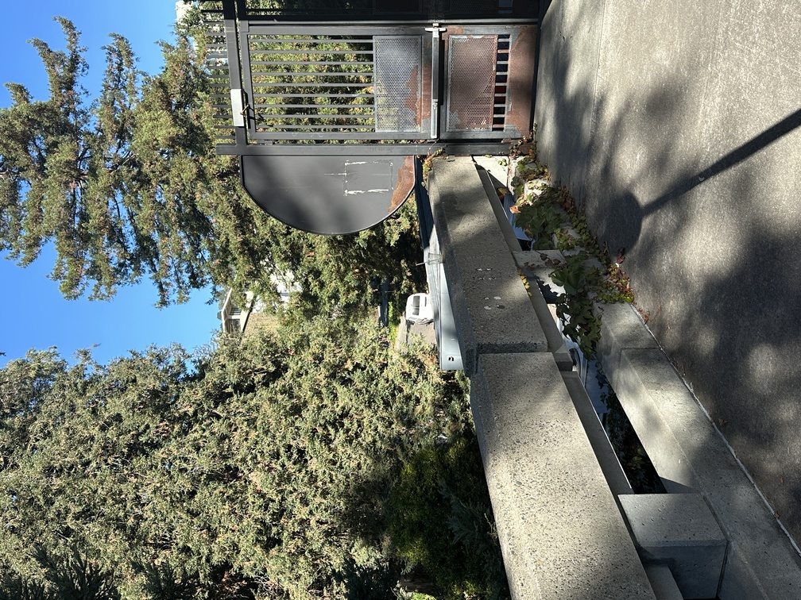
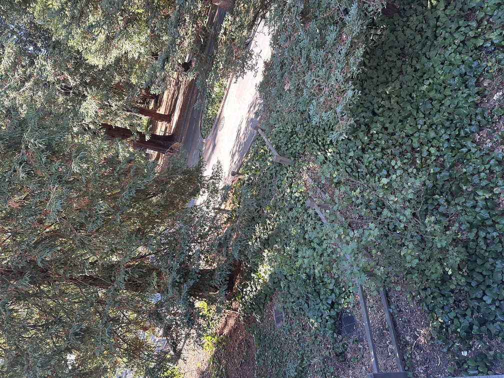
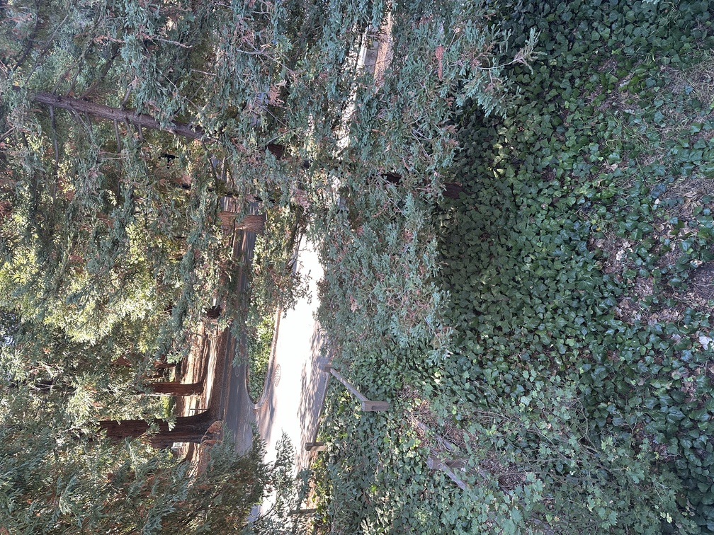
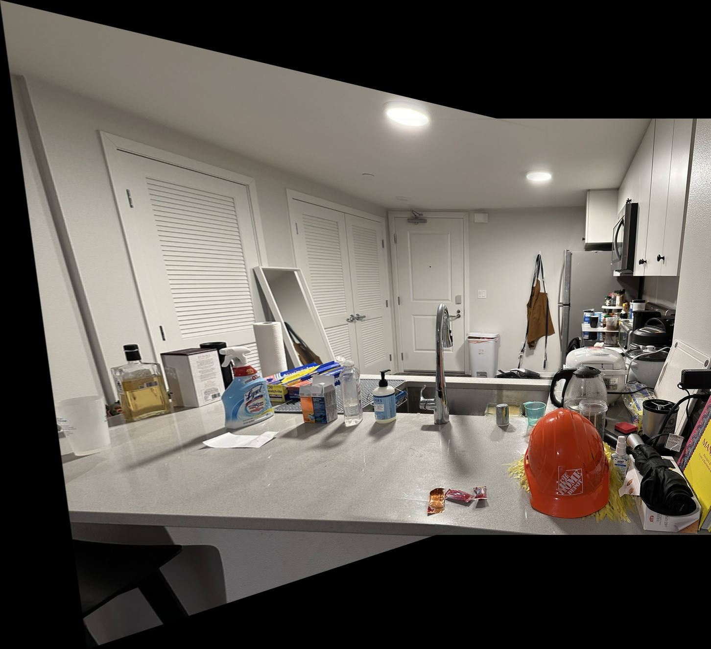

From Project Descritpion: "The goal of this assignment is to get your hands dirty in different aspects of image warping with a “cool” application -- image mosaicing. You will take two or more photographs and create an image mosaic by registering, projective warping, resampling, and compositing them. Along the way, you will learn how to compute homographies, and how to use them to warp images."
Shooting the Images
Unforuntatly, at the time of me shooting these images, I am TERRIBLY sick. So, had to result in taking photos of my messy apartment and from the balony of FSM...

Picture of Counter Angle 1

Picture of Counter Angle 2

Picture of FSM Balacony

Picture of FSM Balacony including more tree

Picture of a GatePicture of a Gate more included

Picture of a Garden

Another picture of the Garden
Recover Homographies
Before we wrap the images into alignment, we must first recover the parameters of the transformation between each pair of images.
We want to recover a projective transformation such that
\[
\begin{bmatrix}
a & b & c \\
d & e & f \\
g & h & 1
\end{bmatrix}
\begin{bmatrix}
x \\
y \\
1
\end{bmatrix}
=
\begin{bmatrix}
wx' \\
wy' \\
w
\end{bmatrix}
\]
Notice that if we expand this out, then we have the following system of equations:
\[
\begin{cases}
ax + by + c = wx' \\
dx + ey + f = wy' \\
gx + hy + 1 = w
\end{cases}
\implies
\begin{cases}
ax + by + c = (gx + hy + 1)x' \\
dx + ey + f = (gx + hy + 1)y'
\end{cases}
\implies
\begin{cases}
ax + by + c - gxx' - hyx' = x' \\
dx + ey + f - gxy' - hyy' = y'
\end{cases}
\]
\[
\implies
\begin{bmatrix}
x & y & 1 & 0 & 0 & 0 & -xx' & -yx' \\
0 & 0 & 0 & x & y & 1 & -xy' & -yy'
\end{bmatrix}
\begin{bmatrix}
a \\
b \\
c \\
d \\
e \\
f \\
g \\
h
\end{bmatrix}
=
\begin{bmatrix}
x' \\
y'
\end{bmatrix}
\]
Thus, given some n amount of correspondence points, we can stack these equations to form a 2n * 9 matrix A. For each correspondence point (x, y) -> (x', y'), we formulate two equations:
Here we showcase two standard examples, one simple example, and one more extreme example of mosiacs created from the pictures.
Picture of Counter Angle 1Picture of Counter Angle 2

Standard Example - Mosaic of Counter
Don't get tricked by bottom left! The shadow of the chair was naturally 'off-looking'... =]
Picture of FSM BalaconyPicture of FSM Balacony including more tree
Standard Example - Mosaic of FSM balcony
Now here's a simple example.
Picture of a GatePicture of a Gate more included
Simple Example - Mosaic of a Gate
Picture of a GardenAnother picture of the Garden
This is more simple since there is a lot of similarities between the two images.
Now for an extreme example!
Extreme Example - Mosaic of a Garden
This is more extreme since the angle of the pictures had been shifted from one to the other, hence the extreme tilt in the warped image compared to the non-warped image.